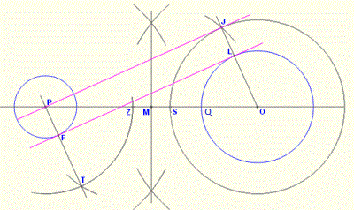

This page shows how to draw one of the two possible internal tangents common to two given circles with compass and straightedge or ruler. This construction assumes you are already familiar with Constructing the Perpendicular Bisector of a Line Segment.
How it works
The figure below is the final construction with the line PJ added.
- The circle OJS is constructed so its radius is the sum of the radii of the two given circles. This means that JL = FP.
- We construct the tangent PJ from the point P to the circle OJS. This is done using the method described in Tangents through an external point.
- The desired tangent FL is parallel to PJ and offset from it by JL. Since PJLF is a rectangle, we need the best way to construct this rectangle. The method used here is to construct PF parallel to OL using the "angle copy" method as shown in Constructing a parallel through a point
As shown below, there are two such tangents, the other one is constructed the same way but on the other half of the circles.

Printable step-by-step instructions
The above animation is available as a printable step-by-step instruction sheet, which can be used for making handouts or when a computer is not available.
Proof
This is the same drawing as the last step in the above animation with line PJ added.
| Argument | Reason | |
|---|---|---|
| 1 | PJ is a tangent to the outer circle O at J. | By construction. See Constructing the tangent through an external point for method and proof. | 2 | FP is parallel to LJ | By construction. See Constructing a parallel (angle copy method) for method and proof. | 3 | FP = LJ | QS was set from the radius of circle P in construction steps 2 and 3. | 4 | FPJL is a rectangle |
FP is parallel to and equal to LJ from (2) and (3). ∠FLJ = ∠FLO = 90° (a tangent is at right angles to radius) |
5 | ∠PFL = ∠FLO = 90° | Interior angles of rectangles are 90° (4) |
| 6 | FL is a tangent to circle O and P | Touches each circle at one place (F and L), and is at right angles to the radius at the point of contact, (5) |
- Q.E.D
Try it yourself
Click here for a printable tangents to two circles construction worksheet with some problems to try. When you get to the page, use the browser print command to print as many as you wish. The printed output is not copyright.Other constructions pages on this site
Lines
- Introduction to constructions
- Copy a line segment
- Sum of n line segments
- Difference of two line segments
- Perpendicular bisector of a line segment
- Perpendicular at a point on a line
- Perpendicular from a line through a point
- Perpendicular from endpoint of a ray
- Divide a segment into n equal parts
- Parallel line through a point (angle copy)
- Parallel line through a point (rhombus)
- Parallel line through a point (translation)
Angles
- Bisecting an angle
- Copy an angle
- Construct a 30° angle
- Construct a 45° angle
- Construct a 60° angle
- Construct a 90° angle (right angle)
- Sum of n angles
- Difference of two angles
- Supplementary angle
- Complementary angle
- Constructing 75° 105° 120° 135° 150° angles and more
Triangles
- Copy a triangle
- Isosceles triangle, given base and side
- Isosceles triangle, given base and altitude
- Isosceles triangle, given leg and apex angle
- Equilateral triangle
- 30-60-90 triangle, given the hypotenuse
- Triangle, given 3 sides (sss)
- Triangle, given one side and adjacent angles (asa)
- Triangle, given two angles and non-included side (aas)
- Triangle, given two sides and included angle (sas)
- Triangle medians
- Triangle midsegment
- Triangle altitude
- Triangle altitude (outside case)
Right triangles
- Right Triangle, given one leg and hypotenuse (HL)
- Right Triangle, given both legs (LL)
- Right Triangle, given hypotenuse and one angle (HA)
- Right Triangle, given one leg and one angle (LA)
Triangle Centers
Circles, Arcs and Ellipses
- Finding the center of a circle
- Circle given 3 points
- Tangent at a point on the circle
- Tangents through an external point
- Tangents to two circles (external)
- Tangents to two circles (internal)
- Incircle of a triangle
- Focus points of a given ellipse
- Circumcircle of a triangle
Polygons
- Square given one side
- Square inscribed in a circle
- Hexagon given one side
- Hexagon inscribed in a given circle
- Pentagon inscribed in a given circle
Non-Euclidean constructions
(C) 2011 Copyright Math Open Reference.
All rights reserved
All rights reserved